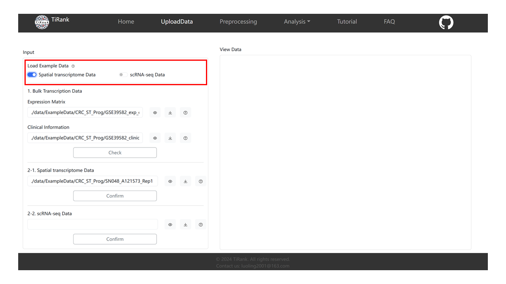
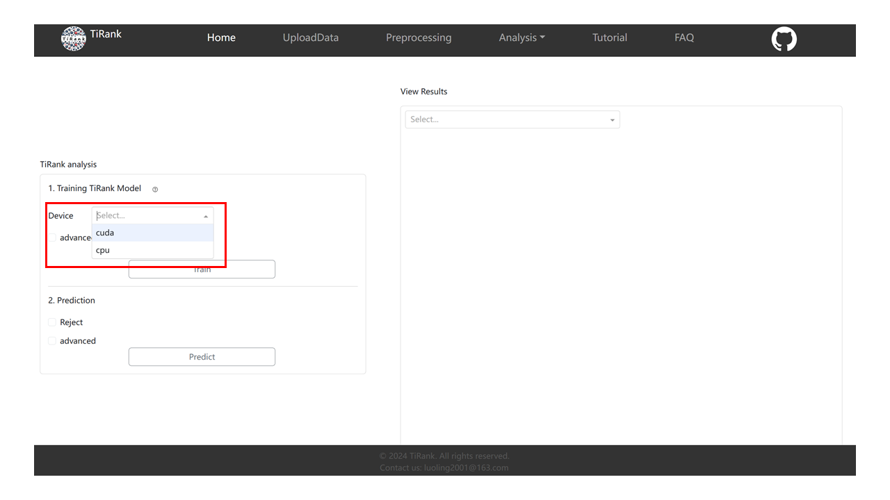

Welcome! This guide will walk you through the entire TiRank-web application, from uploading data to analyzing your results.
The TiRank-web application is a data-driven tool for creating and deploying powerful data analysis applications. It is structured into six key sections: Homepage, Upload Data, Pre-processing, Analysis, Tutorial, and FAQs.
This tutorial will walk you through the four main stages of the app:
Let's get started!
To help you get started, we provide example datasets for both Spatial Transcriptomics (ST) and Single-cell RNA sequencing (scRNA-seq).
As shown in the image, you can select 'Spatial Transcriptomics Data' or 'scRNA-seq Data' to automatically load our sample data. This will fill in all the required paths for the rest of this tutorial.
Hint: You only need to fill out one of the ST (2-1) or scRNA-seq (2-2) forms, not both.

We will use the loaded ST data as our example.
This step specifies which type of data you are using.

Note: The system will show a "Loading" screen. This step may take a few minutes. Please wait for it to complete before clicking anything else.

Mode select: Choose your desired mode.
GenePair Transformation: Select values for 'Top var genes', 'P value threshold', and 'Top gene pairs'. We recommend these default parameters:
'Top var genes': 2000
'P value threshold': 0.05
'Top gene pairs': 2000
Click the 'Perform' button to run the transformation.
Note: This is another long step. The system will enter a "Loading" screen. Please be patient and do not navigate away.

After the pre-processing and transformation are complete, you can use the radio buttons in the right-hand card to explore the different output plots.
First, choose the hardware you want to use for training. In the 'Device' dropdown, you can select Cpu or Cuda (for GPU training).
If you want to use a GPU, you must have the correct PyTorch version installed.
nvidia-smi
import torch
print(torch.cuda.is_available())
If the output is True, you are ready to use your GPU. If False, you must install a compatible version of PyTorch from the Pytorch official website.

'Nhead': 2
'n_output': 32
'nhid1': 96
'nhid2': 8
'nlayers': 2
'n_trails': 20
'dropout': 0.5

'Tolerance': 0.05
'Reject_mode': 'GMM'
When training and prediction are finished, you can select and view the resulting graphs from the drop-down box in the right-hand card.

The final section performs differential gene expression and pathway enrichment.
logFC threshold and P-value threshold from the dropdowns and click "Perform".